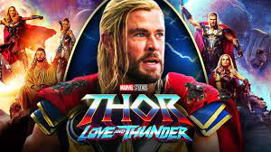
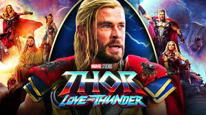
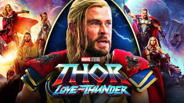
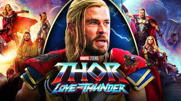

Thor:Love and Thunder is a 2022 American superhero film based on Marvel Comics featuring the character Thor, produced by Marvel Studios and distributed by Walt Disney Studios Motion Pictures. It is the sequel to Thor: Ragnarok (2017) and the 29th film in the Marvel Cinematic Universe (MCU). The film is directed by Taika Waititi, who co-wrote the script with Jennifer Kaytin Robinson, and stars Chris Hemsworth as Thor alongside Christian Bale, Tessa Thompson, Jaimie Alexander, Waititi, Russell Crowe, and Natalie Portman. In the film, Thor attempts to find inner peace, but must return to action and recruit Valkyrie (Thompson), Korg (Waititi), and Jane Foster (Portman)—who is now the Mighty Thor—to stop Gorr the God Butcher (Bale) from eliminating all gods. Hemsworth and Waititi had discussed plans for a sequel to Ragnarok by January 2018. Love and Thunder was announced in July 2019, with Hemsworth, Waititi, and Thompson all set to return, as well as Portman who did not appear in Ragnarok. Waititi wanted to differentiate Love and Thunder from Ragnarok, seeking to make a romance film and 1980s-inspired adventure. He adapted elements from Jason Aaron's run on the Mighty Thor comic book, which sees Foster take on the mantle and powers of Thor whilst under treatment for cancer. Robinson joined to contribute to the script in February 2020, and further casting was revealed later that year including the appearance of the Guardians of the Galaxy. Production was expected to begin in late 2020 but was delayed by the COVID-19 pandemic. Filming ultimately began in January 2021 in Sydney, Australia, and concluded at the beginning of June. Thor: Love and Thunder premiered at the El Capitan Theatre in Hollywood on June 23, 2022, and was released in the United States on July 8, as part of Phase Four of the MCU. The film received praise from critics for its light-hearted nature, visuals, and the performances of Bale and Portman, while criticism was aimed at the screenplay and tonal inconsistency, with many critics deeming the film inferior to Ragnarok. Love and Thunder has grossed over $760 million worldwide, becoming the sixth-highest-grossing film of 2022.
Gorr and his daughter, Love, the last of their race, struggle in a barren desert. Despite their prayers to their god, Rapu, Love dies. The god-killing Necrosword calls to Gorr, leading him to Rapu's lush realm. After Rapu cruelly mocks and dismisses Gorr's plight, he renounces the god, causing Rapu to strangle him. The Necrosword offers itself to Gorr, who kills Rapu with it and vows to kill all gods. Gorr is granted the ability to manipulate shadows and produce monsters, but is cursed with an impending death and corruption under the sword's influence. After Gorr kills several gods, Thor, who has joined the Guardians of the Galaxy,learns of a distress signal from Sif. He parts ways with the team and finds an injured Sif, who warns that Gorr's next target is New Asgard. Meanwhile, Dr. Jane Foster, Thor's ex-girlfriend, has been diagnosed with stage four terminal cancer. With medical treatment proving ineffective, she travels to New Asgard hoping that Thor's hammer Mjolnir, which was previously fractured by Hela,might heal her. Due to an enchantment Thor unknowingly placed on it years earlier to protect Foster, Mjolnir reforges and bonds itself to her. Thor arrives in New Asgard just as Gorr's attack begins. Thor is surprised to find Foster wielding Mjolnir, but teams up with her, Valkyrie, and Korg to fight Gorr. The group thwarts Gorr, but he escapes, kidnapping several Asgardian children and imprisoning them in the Shadow Realm. The group travels to Omnipotence City to warn the other gods and ask for their help in creating an army. The leader of the gods, Zeus, fears Gorr and is unwilling to help, thinking they can remain safe and hidden from Gorr in the City. Zeus orders the group's capture to prevent them from exposing the City's location to Gorr. When Zeus injures Korg, Thor impales Zeus with his own thunderbolt which Valkyrie steals before they escape to confront Gorr in the Shadow Realm. On the way, Thor learns of Foster's cancer diagnosis, and the two rekindle their relationship. The group arrives at the Shadow Realm but are unable to locate the children. Foster sees ancient drawings that depict Thor's battle-axe Stormbreaker as a way to summon the Bifrost to enter the realm of Eternity and deduces the trap laid out by Gorr. She throws away Stormbreaker to prevent Gorr from accessing it. However, Gorr overpowers the group and threatens to kill Foster, forcing Thor to summon it back. Gorr successfully steals Stormbreaker, and injures Valkyrie before a weakened Foster collapses. Upon travelling back to New Asgard, Thor discovers that Foster’s Thor form is not allowing her body to naturally fight the cancer. Due to this, Thor travels to Eternity's altar alone, and using Zeus's thunderbolt, imbues the children with his power to fight Gorr's monsters while he battles Gorr. When Foster senses that Gorr is about to kill Thor, she joins the battle with Mjolnir to save him. They destroy the Necrosword, freeing Gorr from its influence, but the three are brought into Eternity's realm. With Gorr poised to make his wish, Thor implores Gorr to revive his daughter instead of destroying the gods. Thor then leaves Gorr to make his decision and attends to Foster, who succumbs to her illness and dies in his arms. Moved by their display, Gorr wishes for Eternity to revive Love, which it grants. As Gorr dies from the curse, he requests Thor to take care of Love. In the aftermath, the children return to New Asgard, where Valkyrie and Sif begin training them, and a monument in honor of Foster is built. Thor adopts Love, who joins him in his heroics, with the former wielding Mjolnir and the latter wielding Stormbreaker. In a mid-credits scene, back in Omnipotence City, a recuperating Zeus sends his son Hercules to kill Thor. In a post-credits scene, Foster arrives at the gates of Valhalla, where Heimdall welcomes her.